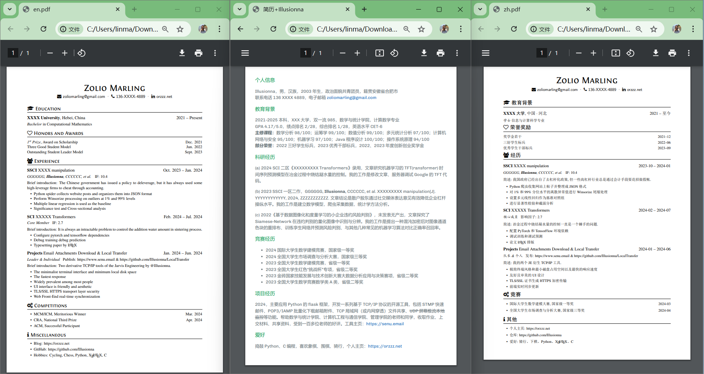
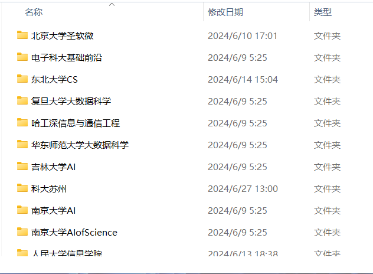
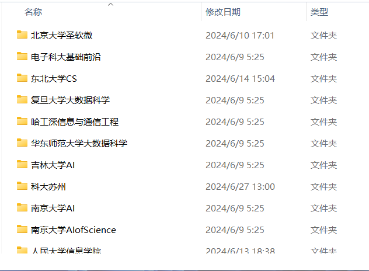

{kind=link}

如果你已经考虑清楚推免保研，并为此做好准备，我希望这个栏目对你有所帮助，祝你好运！
我是在大二下学期，才真正意义上想要保研，前四个学期对保研推免一直不感冒，就上课学学，下课玩玩，做一些自己喜欢的事情，没顾虑很多。这种散漫自由的状态，直到大二下学期末才被点醒，因为身边人都开始为前途担忧而卷了起来。
很大程度上，我感谢舍友王神，是我保研的引路人，他更渴望保研。我是一个独来独往的人，没有学长学姐给我传授经验，也很少找老师去聊保研，很多保研上的事情，都是王神在指导我。除此之外，便是网络上的个人博客，这些博客作者分享他们的推免经历，也让我收获很多，所以我想和他们一样，写下这篇文章，开源共享（但请不要对我的网站流量劫持，也不要攻击测试！），帮助准备保研的你。
保研分为“内推”和“外保”两个阶段，一般在大三下学期结束，大四上学期开始。
内推政策可以在自己本科学校官网上查找，或者最直接地问辅导员、学长学姐。我是学术保研，此外还有一些科创保研、支教保研、服兵役保研等等。我学院的学术保研成绩由三部分构成：GPA、科创、综合测评。
以前我学院三者占比是：70%、10%、20%。但到我这一届，大三上学期时候，政策大改，大刀阔斧地将比例调整成：90%、5%、5%。譬如，原来一篇 SCI 一区一作文章，在科创部分能加 80 分，现在只能加 20 分，这也导致我们专业学术保研排名大洗牌，不过好在我的 GPA 一直第一第二，所以对我没什么影响。
因此，我想表达的是，保研人一定要实时关注学院内推政策。至于外保政策，都可以在申请学校的官网上找到，但特别复杂，因为不同的申请院校对应政策都不太一样，不过基本都看重学生的 GPA 和科研项目实践经历。

保研大致分为三个阶段：夏令营、预推免、九二八。当然，也有更具体的细分，如九推、十推、XXX 计划。你可以搜索引擎查“2024 年港中文夏令营”这样的关键词去了解更全面的信息。
如果你想冲刺清北热门专业，它们一般会在大二的时候就举办一些活动，通常是跟随清北那边的老师提前进组做项目，因此你将有一年的时间准备，同样的，时间线拉得很长，它也有很大风险，自行了解。
于我自己而言，我是在大三下学期四月初开始准备。四月阶段，我对保研可以说是一无所知，像学校推免政策、计算机保研交流绿群、保研热词（rk-rank, wl-waitlist, rw-圣软微, 鸽子）等等。非常感谢舍友王神，带我入门，让我对整个保研体系有了初步认知。
五月，伴随我本科最后一门课程的结束，我的重心全放在推免上。由于我是跨专业，因此要复习的东西实在太多，我准备不过来。所以索性放弃，就只刷 LeetCode 数据结构机试题，但最后也只刷了一半。
在刷题的同时，也在准备保研需要的文书，因为我害怕到六月大概率没时间准备，而事实也确实如此，几乎整个六月都在夏令营系统填报、夏令营最新动态、套磁交流导师之间，打全方位信息战。我将自己夏令营用到的资料全部开源共享，未必适合读者你，但一定都是我精心准备打磨的。
tips: 我的网站服务器节点挂在加利福利亚，所以开梯子下载资源网速会更快。

夏令营材料准备过程，以及后期申请填报，都是极其耗费时间经历且繁琐无趣的事情，我能给你唯一的建议就是“忍”，多查资料、多询问人。
我准备了中文简历和英文简历，一种是 HTML 格式的，还有一种是 LaTeX 格式的，最后几乎所有夏令营简历投递，我都采用了 HTML 格式导出的 PDF 简历。
申请全是硕士，没申请直博，绿色表示入营，红色表示被拒。
夏令营最终情况：仅获得中科大 offer。
 

我将所有经历分别整理成若干个小文章，分为两大类，一类是干货版，还有一类是游记版。读者可根据自己的时间和兴趣选择性阅读，若两类相互补充，或许你会有更全面的了解。
我会遗憾吗？或多或少。我会悔恨吗？有那么一点。
生命的长河里，缘分比努力太过重要。深思熟虑，谋定后动，愿我们行走在大道之上。祝你好运，一马平川。
非诚勿扰：zoliomarling%gmail.com（将 % 号换成 @ 号）